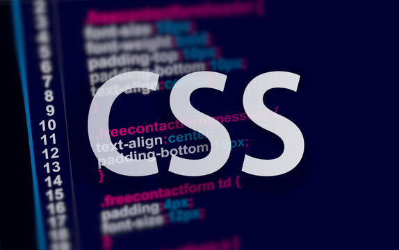

اسم الطالبه: سماح علي ابو مسلم عبد المعطي
الرقم الجامعي: 2501711

أصبحت مواقع الويب جزء ً ا أساسيا من الحياة اليومية؛ فهي تُستخدم في التعليم والتواصل والتسوق والحصول على المعلومات. ولكي تكون صفحات المواقع واضحة وجذابة وسهلة الاستخدام، لا يكفي تنظيم المحتوى فقط، بل ً نحتاج أيضا إلى التحكم في الألوان والخطوط والمسافات وطريقة ترتيب العناصر. هنا يأتي دور لغة ،CSSوهي اختصار لعبارة ،Cascading Style Sheetsوتُستخدم لتحديد الشكل المرئي لصفحات الويب. تهدف هذه الورقة إلى توضيح مفهوم ،CSSوبيان علاقتها بلغة ،HTMLوالتعريف بأهم استخداماتها وطرق ّ إضافتها إلى صفحة الويب، مع أمثلة بسيطة توض ّ ح كيف يمكن لتعديلات قليلة أن تغير مظهر الصفحة. وتكمن أهمية الموضوع في أن فهم CSSيمثل خطوة أساسية لكل من يرغب في تعلم تصميم المواقع أو تطوير واجهات المستخدم
هي لغة تنسيق تُستخدم لوصف كيفية عرض عناصر صفحة الويب في المتصفح. بينما تحدد HTMLبنية الصفحة ومحتواها، مثل العناوين والفقرات والصور والروابط، تتحكم CSSفي مظهر هذه العناصر، مثل لون النص وحجمه والخلفية والهوامش وترتيب المحتوى. ويساعد الفصل بين المحتوى والتصميم على تعديل شكل الموقع دون الحاجة إلى إعادة كتابة محتواه. فعلى سبيل المثال، يمكن إنشاء عنوان باستخدام ،HTMLثم استخدام CSSلجعله أزرق اللون وكبير الحجم. كما يمكن تطبيق ملف تنسيق واحد على صفحات متعددة، مما يساعد على الحفاظ على تصميم موحد للموقع ويجعل التعديلات أسهل
يمكن تغيير لون النص والخلفية لإبراز المعلومات المهمة وتحقيق تباين يساعد على القراءة
CSSتحديد نوع الخط وحجمه ودرجة سماكته ومحاذاة النص وارتفاع السطر
يمكن التحكم في المسافة داخل العنصر وخارجه، وإضافة حدود وزوايا دائرية وظلال لتحسين شكل البطاقات والأزرار
تساعد أدوات مثل Flexboxو Gridعلى ترتيب العناصر في صفوف وأعمدة، وتوزيع المساحات بطريقة منظمة
يمكن استخدام قواعد CSSلتكييف عرض العناصر وترتيبها مع أحجام الشاشات المختلفة، مثل الهاتف والحاسوب اللوحي والحاسوب الشخصي
تسهم CSSفي تحسين تجربة المستخدم من خلال تنظيم المحتوى وتوضيح التسلسل البصري للعناوين والنصوص والأزرار. كما تساعد على توحيد مظهر الصفحات، وتقليل تكرار التنسيق عند استخدام ملفات خارجية. وتدعم CSSتصميم واجهات تتكيف مع الشاشات المختلفة، وهو أمر مهم لأن المستخدمين يتصفحون المواقع عبر أجهزة متعددة. ً ومن فوائدها أيض ً ا إمكانية تطوير التصميم تدريجيا؛ فيستطيع المصمم تجربة ألوان وخطوط وتخطيطات مختلفة دون تغيير بنية HTMLالأساسية. ومع ذلك، ينبغي استخدام الألوان والخطوط باعتدال، ومراعاة وضوح النص ً والتباين بينه وبين الخلفية، حتى لا يصبح التصميم جميلا ظاهريًا لكنه صعب القراءة أو الاستخدام
يتضح مما سبق أن CSSعنصر أساسي في بناء صفحات ويب جذابة ومنظمة وسهلة الاستخدام. فهي تكمل دور HTMLمن خلال التحكم في الألوان والخطوط والمسافات والتخطيط والتصميم المتجاوب. وتساعد الأمثلة البسيطة على فهم طريقة عمل قواعد ً CSSوكيفية تطبيقها عمليا. لذلك، فإن تعلم أساسيات CSSيمثل خطوة مهمة للمبتدئين في مجال تصميم وتطوير مواقع الويب، كما أن الممارسة المستمرة والرجوع إلى المراجع الموثوقة يساعدان على اكتساب مهارة أفضل في استخدامها
| وجه المقارنة | HTML | CSS |
|---|---|---|
| الوظيفة | تحديد محتوى الصفحة | تنسيق شكل الصفحة |
| الأمثلة | العناوين والفقرات والصور | الألوان والخطوط والمسافات |
| التركيز | المحتوى | التصميم |